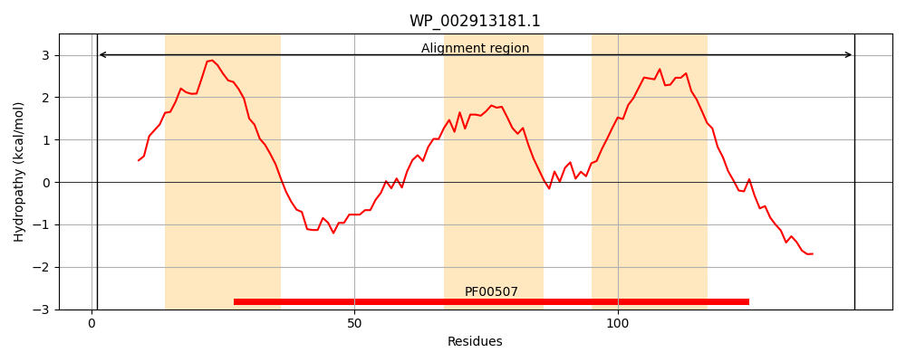
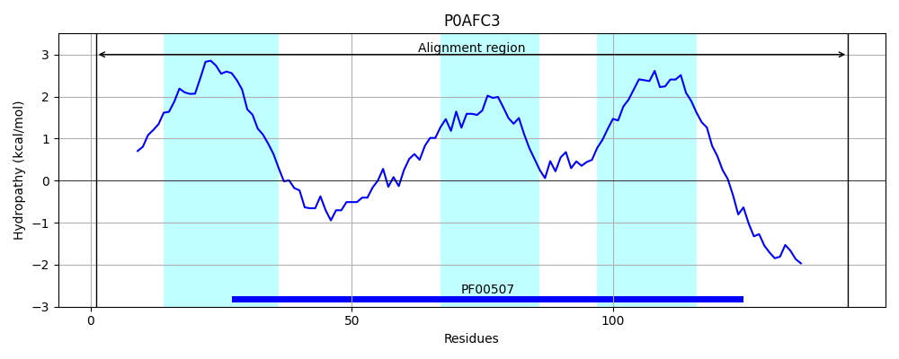
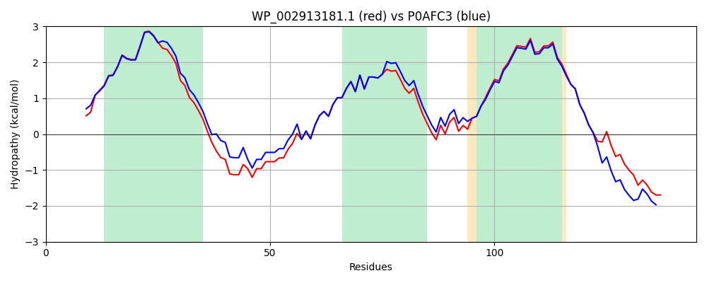

Hit Accession: P0AFC3
Hit TCID: 3.D.1.1.1
Hit Description: gnl|BL_ORD_ID|8812 gnl|TC-DB|P0AFC3|3.D.1.1.1 NADH-quinone oxidoreductase subunit A - Escherichia coli.
Mach Len: 145
e:0.000000
Query TMS Count : 3
Hit TMS Count: 3
TMS-Overlap Score: 3.150000
Predicted Substrates:CHEBI:5584;hydron
BLAST Alignment:
Score: 687 , Bit scores: 269 bits, E-value: 1.6e-94, Alignment length: 145, Percentage identity: 92
Query: 1 MRMSTSTEVIAHHWAFAIFLIIAIGLCCLMLVGGWYLGGRARARSKNTPFESGIDSVGSARLRLSAKFYLVAMFFVIFDVEALYLYAWSTSIRESGWVGFVEAAIFILVLLAGLVYLVRIGALDWTPARSRRTLVNPETDSPTNR 145
M MSTSTEVIAHHWAFAIFLI+AIGLCCLMLVGGW+LGGRARARSKN PFESGIDSVGSARLRLSAKFYLVAMFFVIFDVEALYL+AWSTSIRESGWVGFVEAAIFI VLLAGLVYLVRIGALDWTPARSRR +NPET+S NR
Sbjct: 1 MSMSTSTEVIAHHWAFAIFLIVAIGLCCLMLVGGWFLGGRARARSKNVPFESGIDSVGSARLRLSAKFYLVAMFFVIFDVEALYLFAWSTSIRESGWVGFVEAAIFIFVLLAGLVYLVRIGALDWTPARSRRERMNPETNSIANR 145 | Protein Hydropathy Plots: |
|---|
|  |  |
Pairwise Alignment-Hydropathy Plot:
|
|---|
|  |